Community Training Classes & Labs > F5 SSL Orchestrator Index
2.2.1. LAB 1 – CREATE A TRANSPARENT FORWARD PROXY SSLO¶
The majority of enterprise forward proxy configurations will involve a single F5 platform performing the SSL visibility task. The SSL Orchestrator has been designed with that principle in mind and performs robust security service chaining of security devices attached to a single appliance. SSL Orchestrator 5.0 now makes configuration of a single-box deployment simple and intuitive. Please follow the steps below to create a transparent forward proxy SSL Orchestrator configuration.
2.2.1.1. Step 1: Review the lab environment and map out the services and endpoints¶
Review the “SSL Orchestrator Lab Environment” section. This lab will attach one of each type of security service (HTTP, ICAP, L2, L3, TAP) to SSLO for an outbound forward proxy traffic flow. Afterwards, an internal client will be able to access remote (Internet) resources through SSLO, providing decrypted, inspectable traffic to the security services.
The client is attached to a 10.20.0.0/24 network and is assigned the IP 10.20.0.60. This network is attached to the BIG-IP 1.1 interface.
The L2 device is an Ubuntu 14.04 LTS server configured to bridge its eth1 and eth2 interfaces. Its inbound VLAN (traffic to it) is attached to the BIG-IP 1.6 interface. Its outbound interface (traffic coming from it) is attached to the BIG-IP 1.7 interface.
The L3 device is an Ubuntu 14.04 LTS server configured to route between its eth1.10 and eth1.20 (tagged) interfaces. Its inbound VLAN (traffic to it) is attached to the BIG-IP 1.3 (VLAN tag 30) interface and has an IP of 198.19.64.64/25. Its outbound interface (traffic coming from it) is attached to the BIG-IP 1.3 (VLAN tag 60) interface and has an IP of 198.19.64.130/25. Its default gateway is 198.19.64.245, which will be a VLAN self-IP on the BIG-IP.
The TAP device is an Ubuntu 14.04 LTS server configured with a single eth1 interface. That interface is attached to the BIG-IP 1.4 interface.
The DLP/ICAP device is an Ubuntu 14.04 LTS server configured with a single eth1 interface. That interface is attached to the BIG-IP 1.5 interface and has an IP of 10.70.0.10 and listening on port 1344. The box is running c-icap and Squid/Clamav.
The Explicit Proxy device is an Ubuntu 14.04 LTS server configured with Squid. Its interfaces are eth1.30 and eth1.40 (tagged). Its inbound VLAN (traffic to it) is attached to the BIG-IP 1.3 (VLAN tag 110) interface and has an IP of 198.19.96.66/25. Its outbound interface (traffic coming from it) is attached to the BIG-IP
1.3 (VLAN tag 120) interface and has an IP of 198.19.96.136/25. Its default gateway is 198.19.96.245, which will be a VLAN self-IP on the BIG-IP.
The outbound network is attached to the BIG-IP 1.2 interface, in the 10.30.0.0/24 subnet, and has a gateway of 10.30.0.1.
In the lab, client inbound, Internet outbound, and DLP VLANs and self-IPs are already created.
2.2.1.2. Step 2: Fulfill the SSL Orchestrator prerequisites¶
There are a number of objects that SSL Orchestrator does not create and expects to exist before deploying the iApp. You must create the following objects before starting the iApp:
- Import the CA certificate and private key – in order to terminate and re-encrypt outbound SSL traffic, SSL Forward Proxy must re-issue, or rather “forge” a new server certificate to the client. In order to perform this re-issuance process, the BIG-IP must possess a certificate authority (CA) certificate and associated private key. This lab environment already has a subordinate CA certificate and private key installed.
- Create the client inbound VLAN and self-IP – create the VLAN and self-IP that connects the client to the BIG-IP. In this lab that’s the 10.20.0.0/24 subnet and interface 1.1 on the BIG-IP. This lab environment already has this VLAN and self-IP created.
- Create the Internet outbound VLAN and self-IP – create the VLAN and self-IP that connects the BIG-IP to the outbound Internet router. In this lab that’s the 10.30.0.0/24 subnet and interface 1.2 on the BIG-IP. This lab environment already has this VLAN and self-IP created.
- Create the DLP VLAN and self-IP – if it is desired to isolate the DLP/ICAP device, create the VLAN and self- IP that connects the DLP device to the BIG-IP. In this lab that’s the 10.70.0.0/24 subnet and interface 1.5 on the BIG-IP. The DLP security device is listening on 10.70.0.10 and ICAP is listening on port 1344. This lab environment already has this VLAN and self-IP created.
- Create the default internet route for outbound traffic – the iApp provides an option to leverage a defined gateway pool or use the system default route. If a gateway pool is not used, they system route table will need to have a default route used to reach Internet destination. We’ll use a gateway pool defined within SSLO to create this Route.
2.2.1.3. Step 3: Create the SSL Orchestrator deployment through Guided Configuration¶
The SSL Orchestrator Guided Configuration presents a completely new and streamlined user experience. This workflow-based architecture provides intuitive, re-entrant configuration steps tailored to the selected topology.
{kind=link}
Topology System Settings SSL Configuration Service Service Chain Security Policy Interception Rule Summary
The following steps will walk through the Guided Configuration (GC) to build a simple transparent forward proxy.
SSL Orchestrator - click on SSL Orchestrator panel then click Configuration

Initialization – if this is the first time accessing SSLO in a new BIG-IP build, upon first access, GC will automatically load and deploy the built-in SSLO package.
Configuration review and prerequisites – take a moment to review the topology options and workflow configuration steps involved. Optionally satisfy any of the DNS, NTP and Route prerequisites from this page. Keep in mind, however, that aside from NTP, the SSLO GC will provide an opportunity to define DNS and route settings later in the workflow. No other configurations are required on this page, so click Next.
Note
DNS and NTP settings have already been defined in this lab.


Topology Properties – SSLO now creates discreet configurations based on the selected topology. For example, in previous versions of SSLO, a transparent and explicit forward proxy might be defined together. In SSLO 5.0, these are configured separately. An explicit forward proxy topology will ultimately create an explicit proxy listener and its relying transparent proxy lister, but the transparent listener will be bound only to the explicit proxy tunnel. If a subsequent transparent forward proxy topology is configured, it will not overlap the existing explicit proxy objects. The Topology Properties page provides the following options,
The Protocol option presents four protocol types:
TCP – this option creates a single TCP wildcard interception rule for the L3 Inbound, L3 Outbound L3, and L3 Explicit Proxy topologies.
UDP – this option creates a single UDP wildcard interception rule for L3 Inbound and L3 Outbound topologies.
Other – this option creates a single any protocol wildcard interception rule for L3 Inbound and L3 Outbound topologies, typically used for non-TCP/UDP traffic flows.
Any – this option creates the TCP, UDP and non-TCP/UDP interception rules for outbound traffic flows.
The SSL Orchestrator Topologies option page presents six topologies:
- L3 Explicit Proxy – this is the traditional explicit forward proxy.
- L3 Outbound – this is the traditional transparent forward proxy.
- L3 Inbound – this is a reverse proxy “gateway” configuration. In its simplest form, this topology builds an SSLO environment designed to sit *in front of* another ADC or routed path. Advanced options allow it to define a pool for more directed traffic flow, but alone does not provide the same flexibility afforded a typical LTM reverse proxy virtual server. It also must perform re-encryption on egress. The primary use case for this topology is as a gateway SSL visibility solution, potentially sitting at a boundary edge in front of multiple internal ADC environments.
- L2 Inbound – the layer 2 topology options insert SSLO as a bump-in-the-wire in an existing routed path, where SSLO presents no IP addresses on its outer edges. The L2 Inbound topology provides a transparent path for inbound traffic flows.
- L2 Outbound – the layer 2 topology options insert SSLO as a bump-in-the-wire in an existing routed path, where SSLO presents no IP addresses on its outer edges. The L2 Outbound topology provides a transparent path for outbound traffic flows.
Note
It is important to distinguish SSLO’s layer 2 topology from those of other traditional layer 2 SSL visibility vendors. “True” layer 2 solutions like Blue Coat’s SSL visibility appliance (SSLVA) limit the types of devices that can be inserted into the inspection zone to layer 2 and below, and devices must be directly connected to the appliance. SSLO’s layer 2 topology only exists at the outer edges. Inside the inspection zone, full-proxy routing is still happening, so layer 3 and HTTP services can still function normally.
- Existing Application – this topology is designed to work with existing LTM applications. Whereas the L3 Inbound topology provides an inbound gateway function for SSLO, Existing Application works with LTM virtual servers that already perform their own SSL handling and client-server traffic management. The Existing Application workflow proceeds directly to service creation and security policy definition, then exits with an SSLO-type access policy and per-request policy that can easily be consumed by an LTM virtual server.
{kind=link}
{kind=link}
{kind=link}
For this lab,
Name: Outbound_demo
Protocol: Any – this will create separate TCP, UDP and non-TCP/UDP interception rules.
IP Family: IPv4
Topology: L3 Outbound
Click Save & Next.
 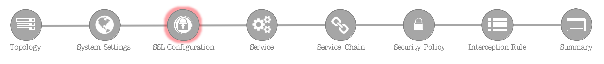
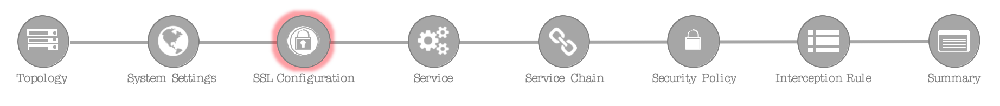
SSL Configurations – this page defines the specific SSL settings for the selected topology, in this case a forward proxy, and controls both client-side and server-side SSL options. If existing SSL settings are available (from a previous workflow), it can be selected and re-used. Otherwise the SSL Configurations page creates new SSL settings for this workflow. For this lab, create a new SSL profile,
Click on Show Advance Settings

Client-side SSL
- Cipher Type – cipher type can be a Cipher Group or Cipher String. If the former, select a previously-defined cipher group (from Local Traffic – Ciphers – Groups). If the latter, enter a cipher string that appropriately represents the client-side TLS requirement. For most environments, DEFAULT is optimal. For this lab, lease Cipher String selected.
- Certificate Key Chain – the certificate key chain represents the certificate and private key used as the “template” for forged server certificates. While re-issuing server certificates on-the-fly is generally easy, private key creation tends to be a CPU-intensive operation. For that reason, the underlying SSL Forward Proxy engine forges server certificates from a single defined private key. This setting gives customers the opportunity to apply their own template private key, and optionally store that key in a FIPS-certified HSM for additional protection. The built-in “default” certificate and private key uses 2K RSA and is generated from scratch when the BIG-IP system is installed. The pre-defined default.crt and default.key can be left as is. Click Done.
- CA Certificate Key Chain – an SSL forward proxy must re-sign, or “forge” remote server certificate to local clients using a local certificate authority (CA) certificate, and local clients must trust this local CA. This setting defines the local CA certificate and private key used to perform the forging operation. Click the pencil icon to Edit, then select subca.f5demolabs.com for both Certificate and Key, and click Done.
Note
SSL Settings minimally require RSA-based template and CA certificates but can also support Elliptic Curve (ECDSA) certificates. In this case, SSLO would forge and EC certificate to the client if the TLS handshake negotiated an ECDHE_ECDSA cipher. To enable EC forging support, add both an EC template certificate and key, and ECCA certificates and key.

- [Advanced] Bypass on Handshake Alert – this setting allows the underlying SSL Forward Proxy process to bypass SSL decryption if an SSL handshake error is detected on the server side. It is recommended to leave this disabled.
- [Advanced] Bypass on Client Certificate Failure – this setting allows the underlying SSL Forward Proxy process to bypass SSL decryption if it detects a Certificate request message from the server, as in when a server requires mutual certificate authentication. It is recommended to leave this disabled.
Note
The above two Bypass option can create a security vulnerability. If a colluding client and server can force and SSL handshake error, or force client certificate authentication, they can effectively bypass SSL inspection. It is recommended that these settings be left disabled.
Server-side SSL
- Cipher Type – cipher type can be a Cipher Group or Cipher String. If the former, select a previously-defined cipher group (from Local Traffic – Ciphers – Groups). If the latter, enter a cipher string that appropriately represents the server-side TLS requirement. For most environments, DEFAULT is optimal.
- Trusted Certificate Authority – browser vendors routinely update the CA certificate stores in their products to keep up with industry security trends, and to account for new and revoked CAs. In the SSL forward proxy use case, however, the SSL visibility product now performs all server-side certificate validation, in lieu of the client browser, and should therefore do its best to maintain the same industry security trends. BIG-IP ships with a CA certificate bundle that maintains a list of CA certificates common to the browser vendors. However, a more comprehensive bundle can be obtained from the F5 Downloads site. For this lab, select the built-in ca-bundle.crt.
- [Advanced] Expire Certificate Response – SSLO performs validation on remote server certificates and can control what happens if it receives an expired server certificate. The options are drop, which simply drops the traffic, and ignore, which mirrors an expired forged certificate to the client. The default and recommended behavior for forward proxy is to drop traffic on an expired certificate.
- [Advanced] Untrusted Certificate Authority – SSLO performs validation on remote server certificates and can control what happens if it receives an untrusted server certificate, based on the Trusted Certificate Authority bundle. The options are drop, which simply drops the traffic, and ignore, which allows the traffic and forges a good certificate to the client. The default and recommended behavior for forward proxy is to drop traffic on an untrusted certificate.
- [Advanced] OCSP – this setting selects an existing or can create a new OCSP profile for server-side Online Certificate Status Protocol (OCSP) and OCSP stapling. With this enabled, if a client issues a Status_Request message in its ClientHello message (an indication that it supports OCSP stapling), SSLO will issue a corresponding Status_Request message in its server-side TLS handshake. SSLO will then forge the returned OCSP stapling response back to the client. If the server does not respond with a staple but contains an Authority Info Access (AIA) field that points to an OCSP responder URL, SSLO will perform a separate OCSP request. The returned status is then mirrored in the stapled client-side TLS handshake. Leave it at —SELECT—-
- [Advanced] CRL – this setting selects an existing or can create a new CRL profile for server- side Certificate Revocation List (CRL) validation. With this enabled, SSLO attempts to match server certificates to locally-cached CRLs. Leave it at “—SELECT—-“
Click Save & Next.
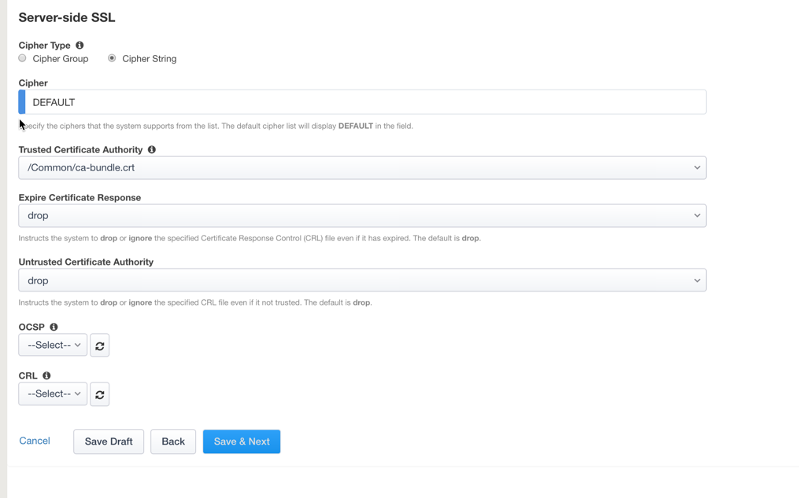
Services List – the Services List page is used to define security services that attach to SSLO. The 5.0 SSLO Guided Configuration now includes a services catalog that contains common product integrations. Beneath each of these catalog options is one of the five basic service types. The service catalog also provides “generic” security services. Depending on screen resolution, it may be necessary to scroll down to see additional services.
 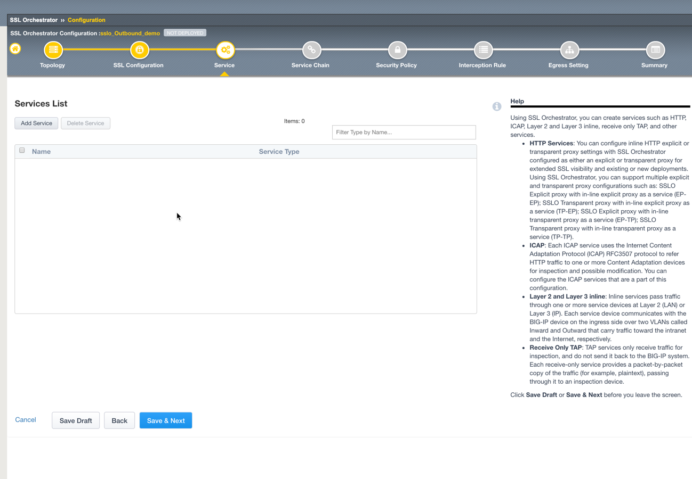
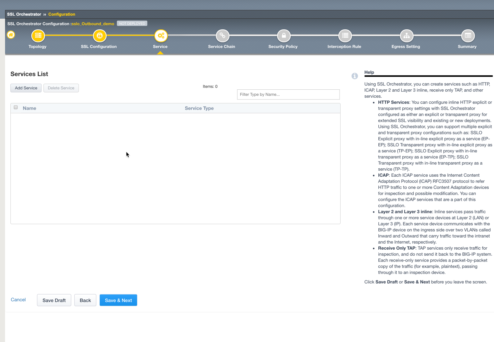
This lab will create one of each type of security service. Click Add Service button, then either select a service from the catalog and click Add, or simply double-click the service to go to its configuration page.
Inline layer 2 service – select the FireEye Inline Layer 2 service from the catalog and click Add, or simply double-click the FireEye Inline Layer 2 service, or any other Inline Layer 2 service in the catalog.

Name – provide a unique name to this service (example “FireEye”).
Network Configuration – paths define the network interfaces that take inspectable traffic to the inline service and receive traffic from the service. Click Add.
Ratio – inline security services are natively load balanced, so this setting defines a ratio, if any for the load balanced pool members. Enter 1.
From BIGIP VLAN – this is the interface taking traffic to the inline service. Select the Create New option, enter a unique name (ex. FireEye_in), select the F5 interface connecting to the inbound side of the service, and add a VLAN tag value if required. For this lab, select interface 1.6.
To BIGIP VLAN – this is the interface receiving traffic from the inline service. Select the Create New option, enter a unique name (ex. FireEye_out), select the F5 interface connecting to the outbound side of the service, and add a VLAN tag value if required. For this lab, select interface 1.7.

Click Done.
Service Action Down – SSLO also natively monitors the load balanced pool of security devices, and if all pool members fail, can actively bypass this service (Ignore), or stop all traffic (Reset, Drop). For this lab, leave it set to Ignore.
Enable Port Remap – this setting allows SSLO to remap the port of HTTPS traffic flowing across this service. This is advantageous when a security service defines port 443 traffic as encrypted HTTPS and natively ignores it. By remapping HTTPS traffic to, say, port 8080, the security service will inspect the traffic. For this lab, enable (check) this option and enter a port value value (ex. 8080).
iRules – SSLO now allows for the insertion of additional iRule logic at different points. An iRule defined at the service only affects traffic flowing across this service. It is important to understand, however, that these iRules must not be used to control traffic flow (ex. pools, nodes, virtuals, etc.), but rather should be used to view/modify application layer protocol traffic. For example, an iRule assigned here could be used to view and modify HTTP traffic flowing to/from the service. Additional iRules are not required, however, so leave this empty.
Click Save.
 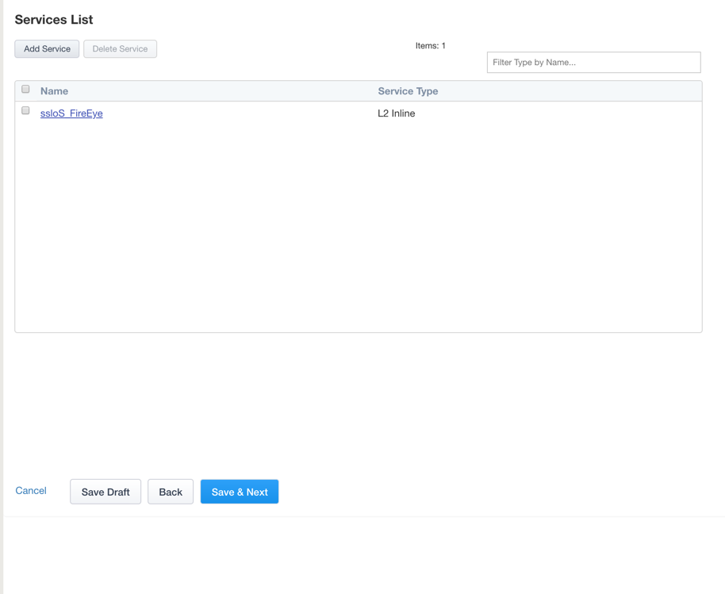
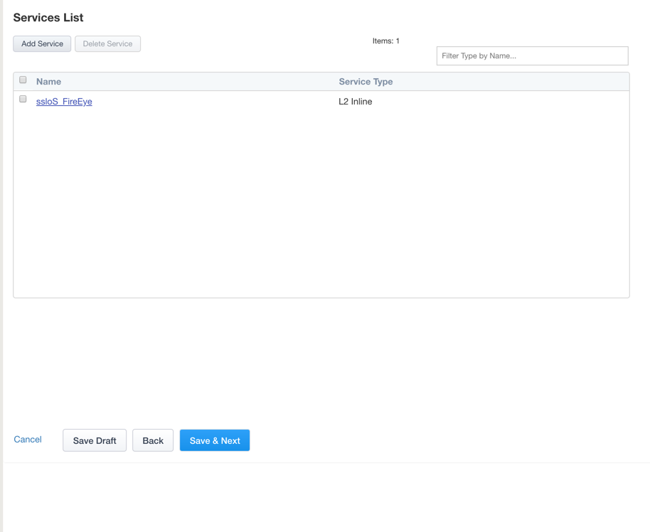
Inline layer 3 service – select the Generic Inline Layer 3 service from the catalog and click Add, or simply double-click the Generic Inline Layer 3 service.

Name – provide a unique name to this service (example “IPS”).
IP Family – this setting defines the IP family used with this layer 3 service. Leave it set to IPv4.
Auto Manage Addresses – when enabled the Auto Manage Addresses setting provides a set of unique, non-overlapping, non-routable IP addresses to be used by the security service. If disabled, the To and From IP addresses must be configured manually. It is recommended to leave this option enabled (checked).
{kind=link}
{kind=link}
{kind=link}
{kind=link}
{kind=link}
{kind=link}
Note
In environments where SSLO is introduced to existing security devices, it is a natural tendency to not want to have to move these devices. And while SSLO certainly allows it, by not moving the security devices into SSLO protect enclaves, customers run the risk of exposing sensitive decrypted traffic, unintentionally, to other devices that may be connected to these existing networks. It is therefore highly recommended, and a security best practice, to remove SSLO integrated security devices from existing networks and place them entirely within the isolated enclave created and maintained by SSLO.

To Service Configuration – the “To Service” defines the network connectivity from SSLO to the inline security device.
- To Service – with the Auto Manage Addresses option enabled, this IP address will be pre-defined, therefore the inbound side of the service must match this IP subnet. With the Auto Manage Addresses option disabled, the IP address must be defined manually. For this lab, leave the 198.19.64.7/25 address intact.
- VLAN – select the Create New option, provide a unique name (ex. IPS_in), select the F5 interface connecting to the inbound side of the service, and add a VLAN tag value if required. For this lab, select interface 1.3 and VLAN tag 50.
Service Down Action – SSLO also natively monitors the load balanced pool of security devices, and if all pool members fail, can actively bypass this service (Ignore), or stop all traffic (Reset, Drop). For this lab, leave it set to Ignore.

L3 Devices – this defines the inbound-side IP address of the inline layer 3 service, used for routing traffic to this device. Multiple load balanced IP addresses can be defined here. Click Add, enter 198.19.64.64, then click Done.
From Service Configuration – the “From Service” defines the network connectivity from the inline security device to SSLO.
- From Service – with the Auto Manage Addresses option enabled, this IP address will be pre-defined, therefore the outbound side of the service must match this IP subnet. With the Auto Manage Addresses option disabled, the IP address must be defined manually. For this lab, leave the 198.19.65.245/25 address intact.
- VLAN – select the Create New option, provide a unique name (ex. IPS_out), select the F5 interface connecting to the outbound side of the service, and add a VLAN tag value if required. For this lab, select interface 1.3 and VLAN tag 60.
Enable Port Remap – this setting allows SSLO to remap the port of HTTPS traffic flowing across this service. This is advantageous when a security service defines port 443 traffic as encrypted HTTPS and natively ignores it. By remapping HTTPS traffic to, say, port 8181, the security service will inspect the traffic. For this lab, enable (check) this option and enter a port value value (ex. 8181).
Manage SNAT Settings – SSLO now defines an option to enable SNAT (source NAT) across an inline layer 3/HTTP service. The primary use case for this is horizontal SSLO scaling, where independent SSLO devices are scaled behind a separate load balancer but share the same inline layer 3/HTTP services. As these devices must route back to SSLO, there are now multiple SSLO devices to route back to. SNAT allows the layer 3/HTTP device to know which SSLO sent the packets for proper routing. SSLO scaling also requires that the Auto Manage option be disabled, to provide separate address spaces on each SSLO. For this, leave it set to None.
iRules – SSLO now allows for the insertion of additional iRule logic at different points. An iRule defined at the service only affects traffic flowing across this service. It is important to understand, however, that these iRules must not be used to control traffic flow (ex. pools, nodes, virtuals, etc.), but rather should be used to view/modify application layer protocol traffic. For example, an iRule assigned here could be used to view and modify HTTP traffic flowing to/from the service. Additional iRules are not required, however, so leave this empty.
Click Save.
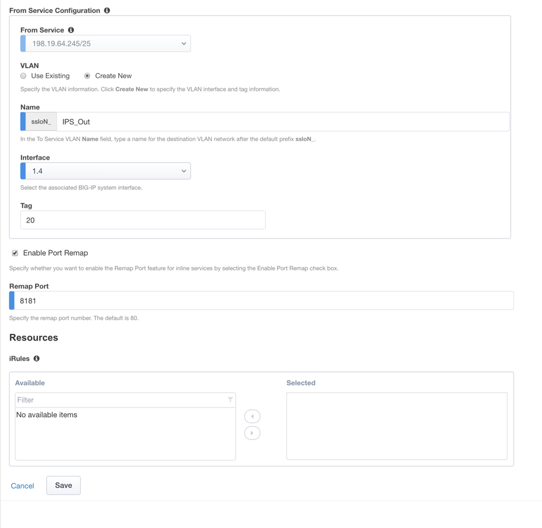Inline HTTP service – an inline HTTP service is defined as an explicit or transparent proxy for HTTP (web) traffic. Select the WSA HTTP Proxy service from the catalog and click Add, or simply double- click the WSA HTTP Proxy service, or any other HTTP Proxy service in the catalog.
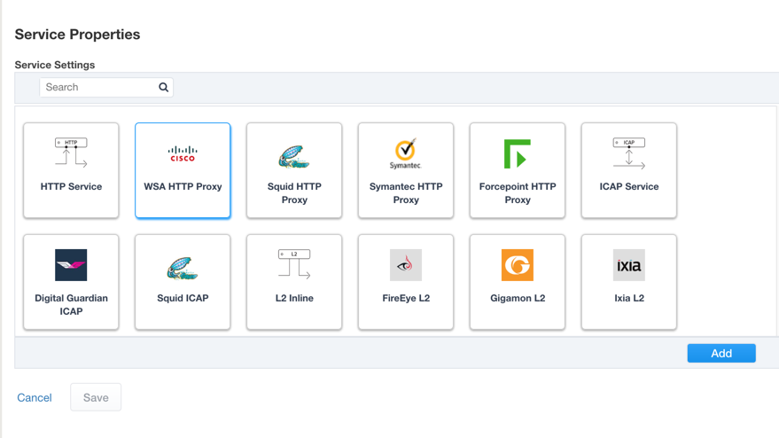Name – provide a unique name to this service (example “Proxy”).
IP Family – this setting defines the IP family used with this layer 3 service. Leave it set to IPv4.
Auto Manage Addresses – when enabled the Auto Manage Addresses setting provides a set of unique, non-overlapping, non-routable IP addresses to be used by the security service. If disabled, the To and From IP addresses must be configured manually. It is recommended to leave this option enabled (checked).
Proxy Type – this defines the proxy mode that the inline HTTP service is in. For this lab, set this option to Explicit.
To Service Configuration – the “To Service” defines the network connectivity from SSLO to the inline security device.
- To Service – with the Auto Manage Addresses option enabled, this IP address will be pre-defined, therefore the inbound side of the service must match this IP subnet. With the Auto Manage Addresses option disabled, the IP address must be defined manually. For this lab, leave the 198.19.96.7/25 address intact.
- VLAN – select the Create New option, provide a unique name (ex. Proxy_in), select the F5 interface connecting to the inbound side of the service, and add a VLAN tag value if required. For this lab, select interface 1.3 and VLAN tag 110.
Service Down Action – SSLO also natively monitors the load balanced pool of security devices, and if all pool members fail, can actively bypass this service (Ignore), or stop all traffic (Reset, Drop). For this lab, leave it set to Ignore.
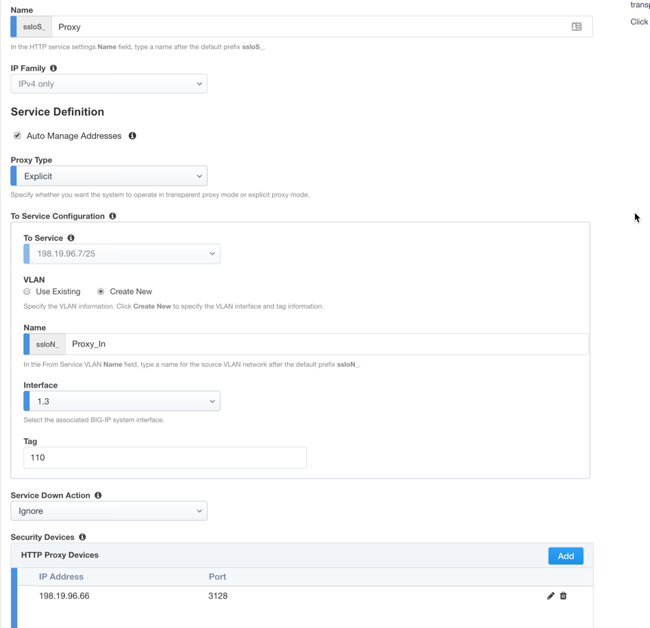HTTP Proxy Devices – this defines the inbound-side IP address of the inline HTTP service, used for passing traffic to this device. Multiple load balanced IP addresses can be defined here. For a transparent proxy HTTP service, only an IP address is required. For an explicit proxy HTTP service, the IP address and listening port is required. Click Add, enter 198.19.96.66 for the IP Address, and 3128 for the Port, then click Done.
From Service Configuration – the “From Service” defines the network connectivity from the inline security device to SSLO.
- From Service – with the Auto Manage Addresses option enabled, this IP address will be pre-defined, therefore the outbound side of the service must match this IP subnet. With the Auto Manage Addresses option disabled, the IP address must be defined manually. For this lab, leave the 198.19.96.245/25 address intact.
- VLAN – select the Create New option, provide a unique name (ex. Proxy_out), select the F5 interface connecting to the outbound side of the service, and add a VLAN tag value if required. For this lab, select interface 1.3 and VLAN tag 120.
Manage SNAT Settings – SSLO now defines an option to enable SNAT (source NAT) across an inline layer 3/HTTP service. The primary use case for this is horizontal SSLO scaling, where independent SSLO devices are scaled behind a separate load balancer but share the same inline layer 3/HTTP services. As these devices must route back to SSLO, there are now multiple SSLO devices to route back to. SNAT allows the layer 3/HTTP device to know which SSLO sent the packets for proper routing. SSLO scaling also requires that the Auto Manage option be disabled, to provide separate address spaces on each SSLO. For this, leave it set to None.
Authentication Offload – when an Access authentication profile is attached to an explicit forward proxy topology, this option will present the authenticated username value to the service as an X-Authenticated-User HTTP header. For this lab, leave it disabled (unchecked).
iRules – SSLO now allows for the insertion of additional iRule logic at different points. An iRule defined at the service only affects traffic flowing across this service. It is important to understand, however, that these iRules must not be used to control traffic flow (ex. pools, nodes, virtuals, etc.), but rather should be used to view/modify application layer protocol traffic. For example, an iRule assigned here could be used to view and modify HTTP traffic flowing to/from the service. Additional iRules are not required, however, so leave this empty.
Click Save.
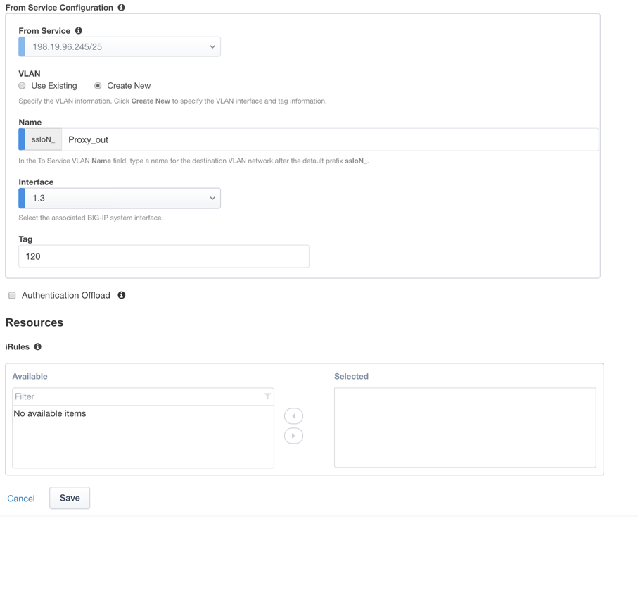ICAP service – an ICAP service is an RFC 3507-defined service that provides some set of services over the ICAP protocol. Select the Digital Guardian ICAP service from the catalog and click Add, or simply double-click the Digital Guardian ICAP service, or any other ICAP service in the catalog.

Name – provide a unique name to this service (example “DLP”).
IP Family – this setting defines the IP family used with this layer 3 service. Leave it set to IPv4.
ICAP Devices – this defines the IP address of the ICAP service, used for passing traffic to this device. Multiple load balanced IP addresses can be defined here. Click Add, enter 10.70.0.10 for the IP Address, and 1344 for the Port, and then click Done.
ICAP Headers – select either Default or Custom to specify additional ICAP headers. To add custom headers, select Custom, otherwise leave as Default.

OneConnect – the F5 OneConnect profile improves performance by reusing TCP connections to ICAP servers to process multiple transactions. If the ICAP servers do not support multiple ICAP transactions per TCP connection, do not enable this option. For this lab, leave the OneConnect setting enabled.
Request URI Path – this is the RFC 3507-defined URI request path to the ICAP service. Each ICAP security vendor will differ with respect to request and response URIs, and preview length, so it is important to review the vendor’s documentation. In this lab, enter /squidclamav.
Response URI Path – this is the RFC 3507-defined URI response path to the ICAP service. Each ICAP security vendor will differ with respect to request and response URIs, and preview length, so it is important to review the vendor’s documentation. In this lab, enter /squidclamav.
Preview Max Length(bytes) – this defines the maximum length of the ICAP preview. Each ICAP security vendor will differ with respect to request and response URIs, and preview length, so it is important to review the vendor’s documentation. A zero-length preview length implies that data will be streamed to the ICAP service, similar to an HTTP 100/Expect process, while any positive integer preview length defines the amount of data (in bytes) that are transmitted first, before streaming the remaining content. The ICAP service in this lab environment does not support a complete stream, so requires a modest amount of initial preview. In this lab, enter 524288.
Service Down Action – SSLO also natively monitors the load balanced pool of security devices, and if all pool members fail, can actively bypass this service (Ignore), or stop all traffic (Reset, Drop). For this lab, leave it set to Ignore.
HTTP Version – this defines whether SSLO sends HTTP/1.1 and HTTP/1.0 requests to the ICAP service.
ICAP Policy – an ICAP policy is a pre-defined LTM CPM policy that can be configured to control access to the ICAP service based on attributes of the HTTP request or response. ICAP processing is enabled by default, so an ICAP CPM policy can be used to disable the request and/or response ADAPT profiles.
Click Save.

TAP service – a TAP service is a passive device that simply receives a copy of traffic. Select the Cisco Sourcefire TAP service from the catalog and click Add, or simply Double-click the Cisco Sourcefire TAP service, or any other TAP service in the catalog.

Name - provide a unique name to this service (example “TAP”).
Mac Address – for a tap service that is not directly connected to the F5, enter the device’s MAC address. For a tap service that is directly connected to the F5, the MAC address does not matter and can be arbitrarily defined. For this lab, enter 12:12:12:12:12:12.
VLAN – this defines the interface connecting the F5 to the TAP service. Click Create New and provide a unique name (ex. TAP_in).
Interface – select the 1.4 interface.
Enable Port Remap – this setting allows SSLO to remap the port of HTTPS traffic flowing to this service. For this lab, leave the option disabled (unchecked).
Click Save.
Click Save & Next.
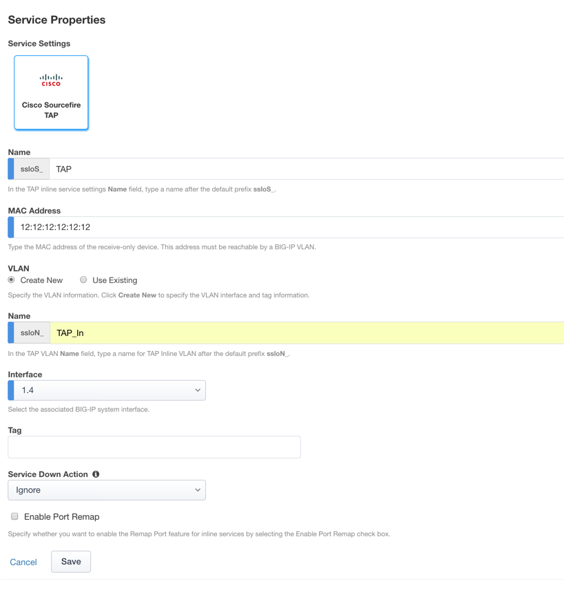 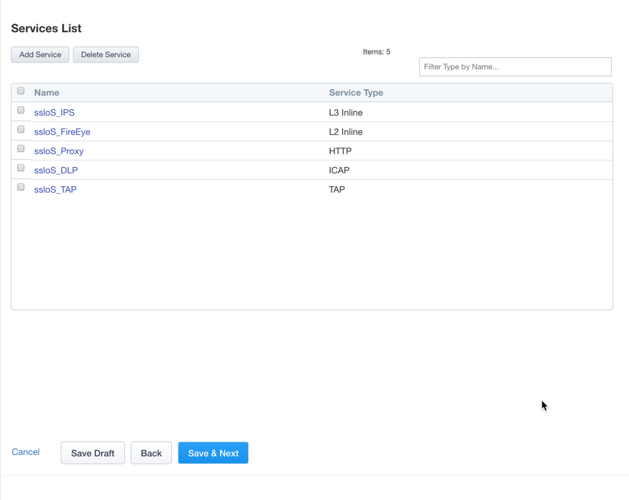Service Chain List – service chains are arbitrarily-ordered lists of security devices. Based on environmental requirements, different service chains may contain different re-used sets of services, and different types of traffic can be assigned to different service chains. For example, HTTP traffic may need to go through all of the security services, while non-HTTP traffic goes through a subset, and traffic destined to a financial service URL can bypass decryption and still flow through a smaller set of security services.
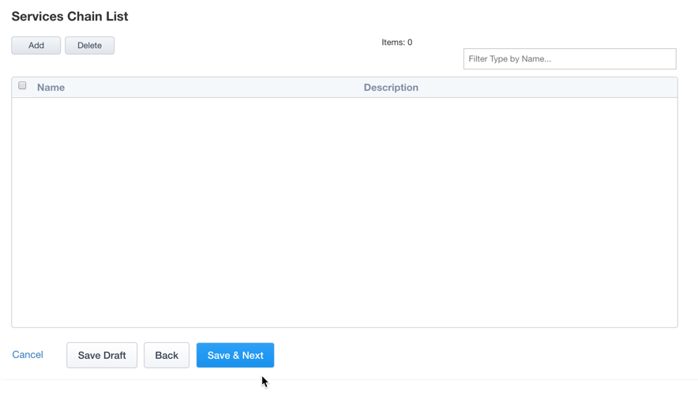Click Add to create a new service chain containing all of the security services.
Name – provide a unique name to this service (ex. “my_service_chain”).
Services – select any number of desired service and move them into the Selected Service Chain Order column, optionally also ordering them as required. In this lab, select all of the services.
Click Save.
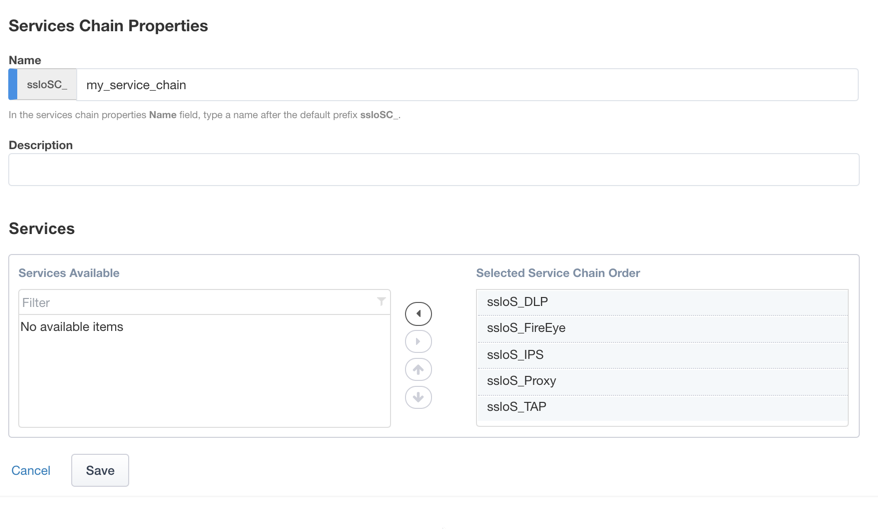Click Add to create a new service chain for just the L2 (ex. FireEye) and TAP services.
- Name – provide a unique name to this service (ex. “my_sub_service_chain”).
- Services – select the inline layer 2 ssloS_FireEye and ssloS_TAP services.
- Click Save.
Click Save & Next
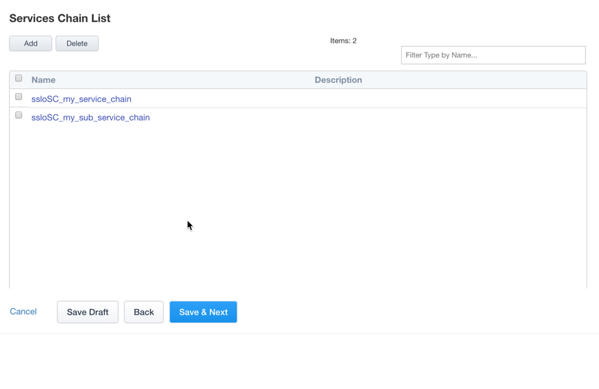 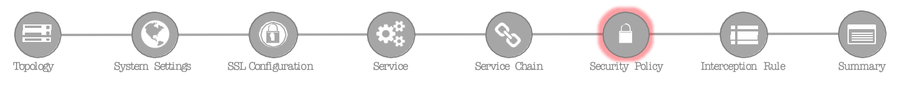Security Policy – security policies are the set of rules that govern how traffic is processed in SSLO. The “actions” a rule can take include,
- Whether or not to allow the traffic
- Whether or not to decrypt the traffic
- Which service chain (if any) to pass the traffic through
The SSLO Guided Configuration presents an intuitive rule-based, drag-and-drop user interface for the definition of security policies.
In the background, SSLO maintains these security policies as visual per-request policies. If traffic processing is required that exceeds the capabilities of the rule-based user interface, the underlying per-request policy can be managed directly.
Note
Once the per-request policy is manipulated, the rules-based interface can no longer be used.
For the lab, create an additional rule to bypass SSL for “Financial Data and Services” and “Health and Medicine” URL categories.
Click Add to create a new rule.
Name – provide a unique name for the rule (ex. “urlf_bypass”).
Conditions
- Select HTTP Connect Catagory
- Category Lookup (All) – add Financial Data and Services and Health and Medicine.
Note
The Category Lookup (ALL) condition provides categorization for TLS SNI, HTTP Connect and HTTP Host information.
Action – select Allow.
Service Chain – select the ssloSC_my_sub_service_chain L2/TAP service chain.
Click OK.

Notice in the list of rules that the All Traffic rule intercepts but does not send traffic to a service chain. For the lab, edit this rule to send all intercepted traffic to a service chain.
Interception Rule – interception rules are based on the selected topology and define the “listeners”, analogous to LTM virtual servers, that accept and process different types of traffic (ex. TCP, UDP, other). The resulting LTM virtual servers will bind the SSL settings, VLANs, IPs, and security policies created in the topology workflow.
Ingress Network (VLANs) – this defines the VLANs through which traffic will enter. For a transparent forward proxy topology, this would be a client-side VLAN. Select client-net.
L7 Interception Rules – FTP and email protocol traffic are all “server-speaks-first” protocols, and therefore SSLO must process these separately from typical client-speaks-first protocols like HTTP. This selection enables processing of each of these protocols, which create separate port-based listeners for each. As required, selectively enable the additional protocols that need to be decrypted and inspected through SSLO. Select FTP, IMAP, POP3 and SMTP
Click Save & Next.

Egress Setting – traffic egress settings are now defined per-topology and manage both the gateway route and outbound SNAT settings.
Manage SNAT Settings – enables per-topology instance SNAT settings. For this lab, select Auto Map.
Gateways – enables per-topology instance gateway routing. Options are to use the system default route, to use an existing gateway pool, or to create a new gateway. For this lab, select Create New.
IPv4 Outbound Gateways – when creating a new gateway, this section provides the ratio and gateway address settings.
Ratio – multiple gateway IP addresses are load balanced in an LTM pool, and the ratio setting allows SSLO to proportion traffic to the gateway members, as required. A ratio on 1 for all members evenly distributes the load across them. For this lab, select 1.
Address – this is the next hop gateway IP address. For this lab, enter 10.30.0.1.
Click Save & Next.
{kind=link}
{kind=link}
{kind=link}
{kind=link}
{kind=link}
{kind=link}
{kind=link}
{kind=link}
{kind=link}
{kind=link}
{kind=link}
{kind=link}
{kind=link}
{kind=link}
{kind=link}
{kind=link}
{kind=link}
Summary – the summary page presents an expandable list of all of the workflow-configured objects. To expand the details for any given setting, click the corresponding arrow icon on the far right. To edit any given setting, click the corresponding pencil icon. Clicking the pencil icon will send the workflow back to the selected settings page.
- When satisfied with the defined settings, click Deploy.
Upon successfully deploying the configuration, SSL Orchestrator will now display a Dashboard view
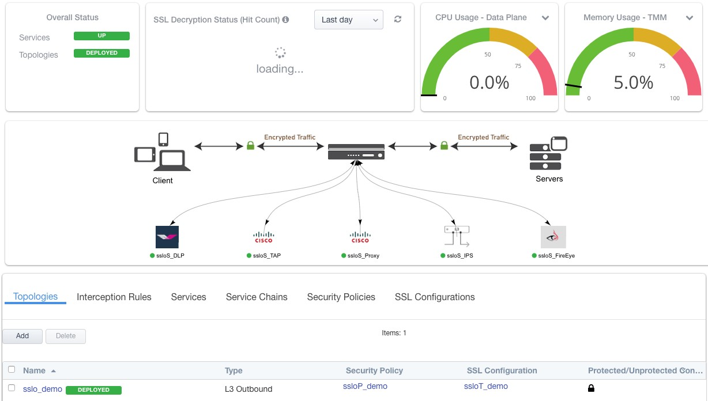The Interception Rules tab shows the listeners that were created per the selected topology.
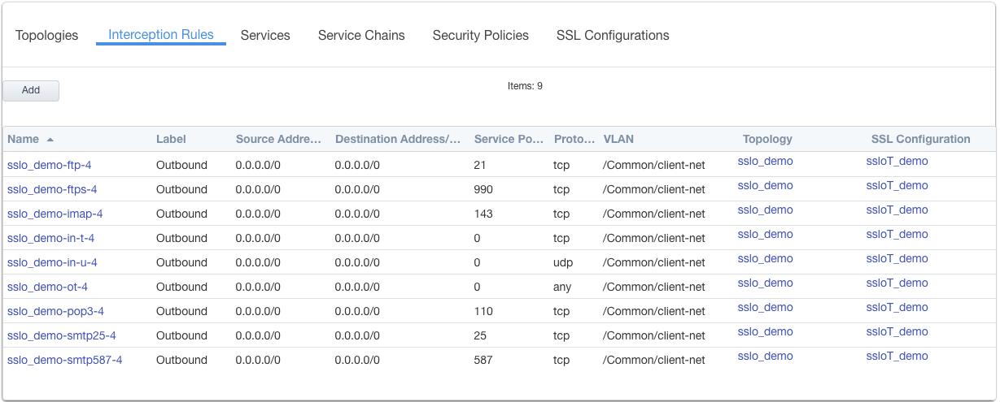In the above,
The -in-t-4 listener defines normal TCP IPv4 traffic.
The -in-u-4 listener defines normal UDP IPv4 traffic.
The -ot-4 listener defines normal non-TCP/non-UDP IPv4 traffic.
- The -ftp, -ftps, -pop3, -smtp25 and -smtp587
listeners create paths for each respective protocol.
{kind=link}
{kind=link}
2.2.1.4. Step 4: Test the solution¶
To test the deployed solution, use the following options:
Server certificate test
Open a browser on the client system and navigate to any remote HTTPS site, for example, *https://www.google.com* Once the site opens in the browser, check the server certificate of the site and verify that it has been issued by the local CA configured in SSLO. This confirms that the SSL forward proxy functionality enabled by SSL Orchestrator is working correctly.
Decrypted traffic analysis on the F5
Perform a tcpdump on the F5 system to observe the decrypted clear text traffic. This confirms SSL interception by SSLO.
tcpdump -lnni [interface or VLAN name] -Xs0
As a function of adding a new service, the UI requires a name for each (source and destination) network. SSL Orchestrator will then create separate source and destination VLANs for inline security devices, and those VLANs will be encapsulated within separate application service paths. For example, given an inline layer 2 service named “FireEye” with its “From BIGIP VLAN” named “FireEye_in”, and its “To BIGIP VLAN” named “FireEye_out”, its corresponding BIG-IP VLANs would be accessible via the following syntax:
*ssloN_ + [network name] + .app/ssloN_ + [network name]*
Example: ssloN_FireEye_in.app/ssloN_FireEye_in ssloN_FireEye_in.app/ssloN_FireEye_in
A tcpdump on the source side VLAN of this FireEye service would therefore look like this:
tcpdump -lnni ssloN_FireEye_in.app/ssloN_FireEye_in -Xs0
The security service VLANs and their corresponding application services are all visible from the BIG-IP UI under Network -> VLANs.
Decrypted traffic analysis on the security services
Depending on the type of security service, it may easier to log into the console shell and run a similar tcpdump capture on the inbound or outbound interface, to tail its capture logs, or to log into its management UI and capture analytics. A tcpdump capture usually requires root or sudo access.
tcpdump -lnni [inerface] -Xs0
{kind=link}